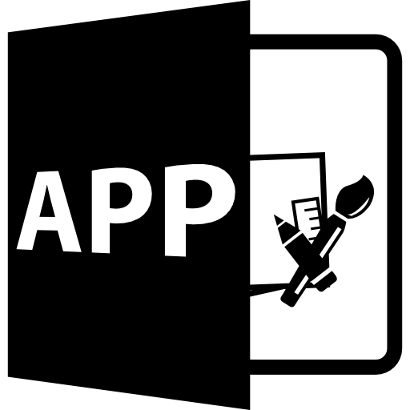

| INFORMACION DE CONTACTO | ||
|
Bucaramanga-Santander, 60003 Bucaramanga-Colombia | |
|
(+57)3175478156 | |
|
andep210399@gmail.com | |
| IDIOMAS | PERFIL PROFESIONAL | |
|---|---|---|
| Español: Natal Ingles:B2 Frances: B1 |
Perfil
Profesional en Geología egresado de la Universidad Industrial de Santander (UIS), estudiante de ingenieria de software de la Universidad de Santander (UDES) y estudiante del programa de desarrolladores de Campus, con ambiciones en el area de big-data y programación orientada a objetos |
|
|
Software:
-Ofimatica(Excel, PowerPoint, Word) -Qgis: 60% -Arcgis: 60% -CorelDraw: 75% -Petrel: 70% -Sublime: 60% -Visual Studio: 70% |
Proposito Personal
Aplicar mis conocimientos adquiridos a lo largo de la carrera en el desarrollo de diferentes proyectos creativos con el fin de nutrir mis conocimientos y aportar a la sociedad |
|
|
Capacitaciones y cursos |
Habilidades: | |
| -SENA:Planificación de un sistema de gestión de calidad – NTC ISO 9001 (07-2021) | -> Resolucion de Problemas | -> Trabajo bajo presión |
|
-SENA:Bases de datos generalidades y sistemas de gestión (07-2021) -SENA:Autocad 2D (12-2021) |
-> Versatilidad | -> Facilidad de aprendizaje |
|
-SENA:Diseño y planos en Autocad 2D (12-2021) |
Educacion | |
|
-CECAM:inglés Bilingüismo temático con habilidades en Call Center (2015) -INSTITUTO DE LENGUAS UIS:Ingles intermedio – Avanzado (2021) -INSTITUTO DE LENGUAS UIS:Frances Intermedio (2020) -ALIANZA COLOMBO-FRANCESA:Frances Intermedio-Avanzado (Cursando actualmente) |
Experiencia Academica
21/03/2016-25/06/2021 Geólogo Bucaramanga, Univerisdad Industrial de Santander (UIS) Tesis de investigacion: Convenio Ecopetrol: 07/2020-05/2021. Bucaramanga, Santander Evaluación de los factores que afectan el comportamiento de los registros eléctricos en las Formaciones Colorado, Mugrosa y La Paz (Cuenca del Valle Medio del Magdalena, Colombia) Logros/Funciones -Identificar los factores que afectan el comportamiento de los registros eléctricos en las Fm. Colorado, Mugrosa y La Paz. -Desarrollar un modelo de litotipos el cual permite definir la calidad del reservorio de las Formaciones, a partir de la integración de análisis de laboratorio y registros de pozos. -Identificar algunos sectores en los Campos Yarigui-Cantagallo y Casabe donde existe “Low Resistivity Pay”, aumentando las reservas en estos. |
|
|
Formacion |
||
|
-Semillero de Cartografía y Geomorfología Aplicada – SCGA-UIS(2018) Miembro
-Sociedad de Geología Aplicada a Depósitos Minerales SGA-UIS (2018-2019) Miembro |
Proyecto de Investigación
(En proceso de puiblicación). Bucaramanga, Santander Articulo“Multidisciplinary analysis for prospect definition and prospectivity assessment in northern perth basin, western Australia” Logros/Funciones -Desarrolar un modelo en 3D de la estructura del subsuelo a partir de la interpretación en petrel de las líneas sísmicas disponibles en la base de datos libres. -Aplicación de la metodología Montecarlo para el cálculo de las reservas. -Realizar un artículo en conjunto en el cual se pusieron en práctica varias ramas de la geología como lo son la estratigrafía, la geofísica, la petrofísica, la geoquímica, la cartografía y la geoestadística integrándolas para generar un modelo del yacimiento y estimar con exactitud las reservas presentes en el mismo. |
|
|
Lenguajes de programacion |
Experiencia Laboral |
|
|
Python: 40%
Html: 40% |
Selección Personal Bilingüe - ISC Colombia
Febrero 2021- Agosto 2021Termino Fijo Bucaramanga, Desempeñé el cargo de agente de selección de personal bilingüe (Ingles/Español) en International Student Center (ISC) Colombia Inmediato: Edgar Calvache, Tel: 3006322219 |
|
|
Geólogo Junior - TIP Colombia Agosto 2021- Octubre 2021 Termino Fijo Bucaramanga, Desempeñé el cargo de Geologo Junior para le empresa TIP ltda, enfocandome en el area de la petrología e interpretacion de datos para estimacion de reservas |
||
|
Costumer Service Agent-Accedo Noviembre 2021- Febrero 2022 Termino Fijo Bucaramanga, Desempeñé el cargo de agente agente en servicio al cliente bilingüe (Ingles/Español) para la empresa Accedo |
||
MIS SERVICIOS |
||
| Desarrollo y analisis de BIG DATA
Especializado en analisis de datos, desarrollo de algoritmos de prediccion y analisis general en big data |
||
|  | Desarrollo de Aplicaciones
Conocimiento avanzado en desarrollo de aplicaciones para moviles y para ordenador, en sistemas windows, ios, linux |
|
Contactame:
|
||